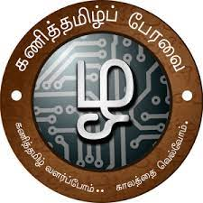

"சேமமுற வேண்டுமெனில் தெருவெல்லாம் தமிழ் முழக்கம் செழிக்கச் செய்வீர்!"
தமிழ் இணையக் கல்விக்கழகத்தின் பரப்புரை அலகே கணித்தமிழ்ப் பேரவை ஆகும்.கல்லூரிகள்தோறும் கணித்தமிழ்ப் பேரவை என்பது தமிழக அரசின் கொள்கை முடிவு ஆகும்.கணித்தமிழ்ப் பேரவையானது, இணையத்தில் தமிழின் பங்களிப்பை வளப்படுத்துதல், வலுப்படுத்துதல் கணித் தமிழ் மற்றும் தமிழ் பயன்பாட்டு மென்பொருள்களை உருவாக்கம் செய்ய ஊக்குவித்தல்/ மாணவர்களுக்கு அகநிலை பயிற்சி அளித்தல் கணிப்பொறியில் தமிழ் உள்ளீட்டு பயிற்சியினை ஆசிரியர்கள், மாணவர்கள், கணிப்பொறி ஆர்வலர்களுக்கு வழங்குதல் கட்டற்ற மென்பொருள் பயன்பாட்டை முன்னெடுத்தல் கணித்தமிழ்த் திருவிழா நடத்துதல் தமிழ் மென்பொருள், குறுஞ்செயலி உருவாக்கம், மின் உள்ளடக்கப் பயிற்சி வழங்குதல் கணித்தமிழ் சார்ந்த பயன்பாட்டை ஊக்குவிக்க கோடை கால முகாம் நடத்துதல் கலைக்களஞ்சிய உருவாக்கம் ஆகியனவற்றை இலக்குகளாகக் கொண்டு செயல்பட்டு வருகிறது.